GPX 3D affiche un fichier GPX sur une carte en relief, en montre le profil, rejoue le parcours comme un film, et peut vous guider sur le terrain avec le GPS de votre appareil. Tout se passe dans le navigateur : rien à installer, aucun compte.
GPX 3D shows a GPX file on a 3D map, draws its profile, replays the route like a film, and can guide you in the field with your device's GPS. Everything runs in the browser: nothing to install, no account.
Démarrer
Getting started
- Ouvrez l'outil dans un navigateur récent (Chrome, Edge, Firefox, Safari).
- Cliquez sur Charger un GPX…, ou glissez un fichier
.gpxn'importe où dans la fenêtre. - La carte se cadre sur la trace, avec un repère vert au départ et rouge à l'arrivée.
- Appuyez sur ▶ pour rejouer le parcours, ou sur Suivre cette trace sur le terrain (GPS) pour vous faire guider.
- Open the tool in a recent browser (Chrome, Edge, Firefox, Safari).
- Click Load a GPX…, or drop a
.gpxfile anywhere in the window. - The map frames the track, with a green marker at the start and a red one at the finish.
- Press ▶ to replay the route, or Follow this track in the field (GPS) to be guided.
Pas de fichier sous la main ? Prenez la trace d'exemple (boucle fictive de 6,5 km en Ardenne) : c'est elle qui illustre cette page. Le sentier d'exemple, plus court et plus sinueux, sert aux illustrations du guidage.
No file at hand? Take the sample track (fictitious 6.5 km loop in the Ardennes): it illustrates this page. The sample path, shorter and twistier, is used for the guidance illustrations.
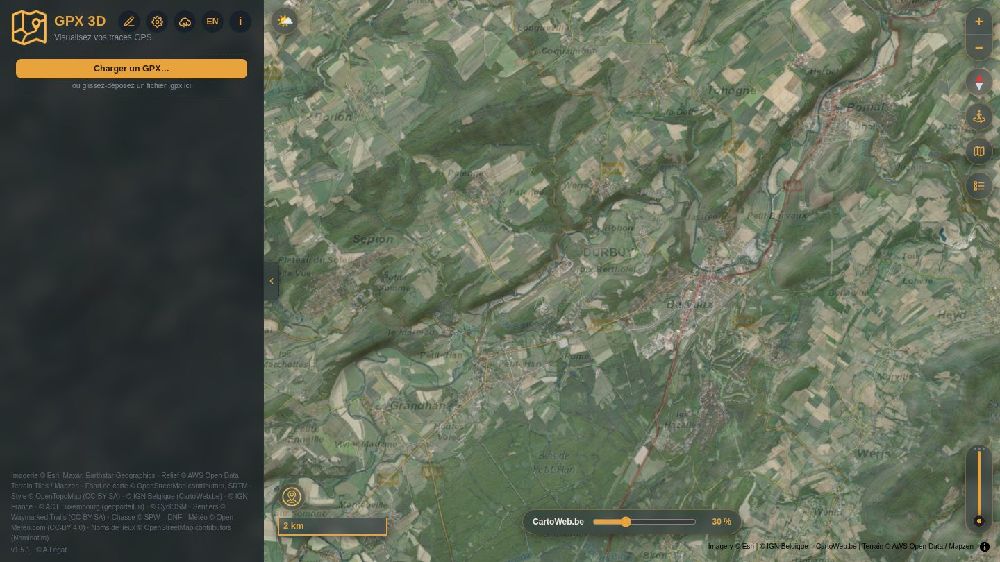
L'interface
The interface
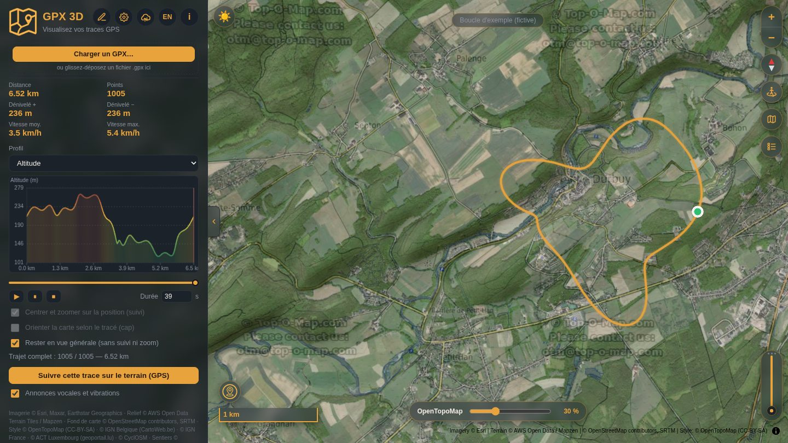
Les boutons de l'en-tête
Header buttons
| Bouton | Rôle | Button | What it does |
|---|---|---|---|
| Crayon | Ouvre The-GPX-Box pour créer ou modifier un tracé ; la trace chargée y est transmise. | Pencil | Opens The-GPX-Box to draw or edit a route; the loaded track is handed over. |
| Engrenage | Options : couleur et épaisseur de la trace, thème, icônes flottantes. | Gear | Options: track colour and width, theme, floating icons. |
| Nuage | Traces GPS OpenStreetMap : importer ou envoyer. | Cloud | OpenStreetMap GPS traces: import or upload. |
| EN / FR | Change la langue de toute l'interface ; le choix est mémorisé. | EN / FR | Switches the language of the whole interface; the choice is remembered. |
| i | Aide rapide (souris et clavier) et documentation complète, avec le lien vers cette page. | i | Quick help (mouse and keyboard) and full documentation, with the link to this page. |
| Trois traits | Menu Outils : sur téléphone, tablette ou fenêtre étroite, il remplace les cinq boutons ci-dessus. | Three bars | Tools menu: on a phone, a tablet or a narrow window, it replaces the five buttons above. |
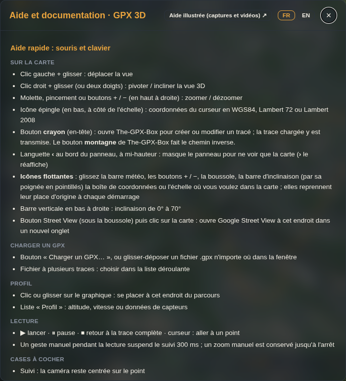
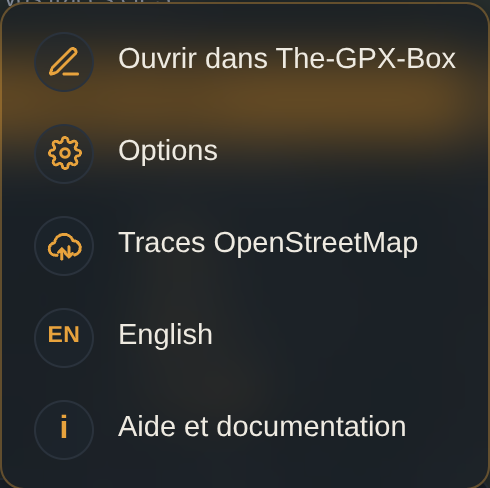
Souris, doigts et clavier
Mouse, fingers and keyboard
| Geste | Effet | Gesture | Effect |
|---|---|---|---|
| Clic gauche + glisser | Déplacer la vue. | Left click + drag | Pan the view. |
| Clic droit + glisser, ou deux doigts | Pivoter et incliner la vue 3D. | Right click + drag, or two fingers | Rotate and tilt the 3D view. |
| Molette, pincement, boutons + / − | Zoomer et dézoomer (jusqu'au zoom 24). | Wheel, pinch, + / − buttons | Zoom in and out (up to zoom 24). |
| Clic droit sans glisser | Menu des points de la trace. | Right click without dragging | Menu for the track points. |
| Échap | Ferme la fenêtre ou le menu ouvert. | Esc | Closes the open window or menu. |
| Languette ‹ / › | Masque ou réaffiche le panneau (état mémorisé). | ‹ / › tab | Hides or shows the panel (remembered). |
| Bord droit du panneau | Redimensionne le panneau (largeur mémorisée, minimum 280 px). | Panel's right edge | Resizes the panel (width remembered, minimum 280 px). |
Les icônes posées sur la carte
The icons on the map
- En haut à droite : zoom + / −, boussole (clic : remet le nord en haut), Street View, fond de carte, légende.
- En bas à droite : barre verticale d'inclinaison, de 0° à 70°.
- En bas à gauche : échelle et icône épingle (coordonnées du curseur).
- En haut : barre lieu + météo, et la pastille du nom de la trace — qui devient le bandeau d'instruction pendant le guidage.
- Toutes ces icônes se déplacent à la souris ou au doigt. Elles reprennent leur place d'origine à chaque démarrage : un déplacement ne vaut que pour la session en cours.
- Top right: zoom + / −, compass (click to put north up), Street View, basemap, legend.
- Bottom right: vertical tilt bar, from 0° to 70°.
- Bottom left: scale bar and pin icon (cursor coordinates).
- Top: the place + weather bar, and the track-name badge — which becomes the instruction banner during guidance.
- All of these can be dragged with the mouse or a finger. They return to their original place at every start-up: a move only lasts for the current session.
Street View : cliquez le bouton, puis un endroit de la carte — Google Street View s'ouvre à cet endroit dans un nouvel onglet.
Street View: click the button, then a spot on the map — Google Street View opens there in a new tab.
Charger une trace
Loading a track
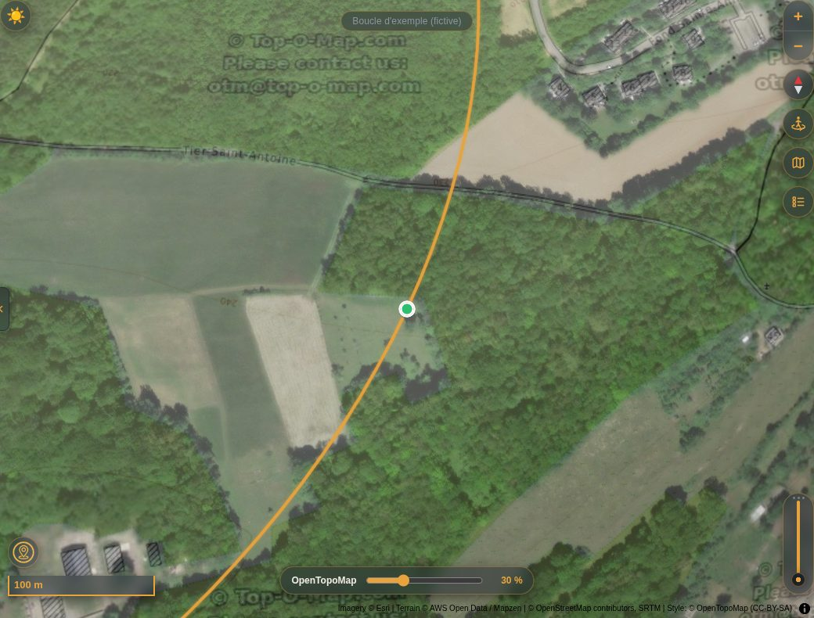
- Un fichier à plusieurs traces fait apparaître une liste déroulante pour choisir celle à afficher.
- Les itinéraires (
rte) ne sont lus que si le fichier ne contient aucune trace (trk). - Quand la photo aérienne est affichée, les tuiles de tout le parcours sont préchargées (400 au maximum) ; le bouton Annuler passe outre.
- Les points espacés de plus de 8 m sont complétés par interpolation (jusqu'à 60 000 points) : la trace et la caméra restent fluides.
- La navigation est ensuite bornée à la zone de la trace agrandie ×4, pour ne pas charger des tuiles inutiles.
- A file with several tracks shows a drop-down list to pick the one to display.
- Routes (
rte) are read only when the file contains no track (trk). - When the aerial photo is on, the tiles of the whole route are preloaded (400 at most); the Cancel button skips it.
- Points more than 8 m apart are filled in by interpolation (up to 60,000 points), keeping the line and the camera smooth.
- Navigation is then limited to the track's area enlarged ×4, to avoid loading useless tiles.
Ce qui est lu dans le fichier
What is read from the file
Pour chaque point : position, altitude (ele), heure (time) et toutes les valeurs numériques des extensions (fréquence cardiaque, cadence, température…). Sans altitude, pas de dénivelé ni de profil d'altitude ; sans horodatage, pas de vitesse.
For every point: position, elevation (ele), time (time) and all numeric values from extensions (heart rate, cadence, temperature…). Without elevation there is no ascent/descent and no elevation profile; without timestamps there is no speed.
Statistiques et profil
Statistics and profile
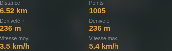

Cliquez ou glissez sur le graphique pour placer la lecture à cet endroit du parcours : le marqueur se déplace sur la carte au même instant.
Click or drag on the chart to move playback to that point of the route: the marker moves on the map at the same time.
Dénivelés : ils sont cumulés d'un point à l'autre, sans lissage — ils restent donc sensibles au bruit de l'altitude GPS.
Ascent and descent: summed from point to point without smoothing — so they remain sensitive to GPS elevation noise.
Lecture animée
Animated playback

- ▶ lance la lecture (et repart du début si le parcours est terminé), ⏸ met en pause, ⏹ revient à la trace complète.
- Le curseur place la lecture n'importe où ; le profil fait la même chose.
- Durée (5 à 50 000 s) : proposée à chaque chargement d'après la vitesse réelle de la trace, puis modifiable. Elle est mémorisée séparément pour la vue générale et pour le suivi.
- En vue générale, la durée saisie est la durée réelle de la lecture (proposition : environ 6 s par km, entre 30 et 600 s).
- En suivi, la durée correspond à l'échelle 1:500 : la lecture ralentit quand la vue est serrée et accélère quand elle est large (de 3 % à 5 × la vitesse réglée).
- ▶ starts playback (restarting from the beginning if the route has finished), ⏸ pauses, ⏹ goes back to the full track.
- The slider jumps anywhere in the route; the profile does the same.
- Duration (5 to 50,000 s): suggested at every load from the track's real speed, then editable. It is remembered separately for overview and for follow mode.
- In overview, the duration you set is the real playback time (suggestion: about 6 s per km, between 30 and 600 s).
- In follow mode, the duration applies at scale 1:500: playback slows down in a tight view and speeds up in a wide one (from 3 % to 5× the set speed).
Un geste de la main pendant la lecture suspend le suivi, qui reprend 300 ms après ; un zoom manuel est conservé jusqu'à l'arrêt de la lecture.
A hand gesture during playback pauses the follow camera, which resumes 300 ms later; a manual zoom is kept until playback stops.
Modes de caméra
Camera modes
| Case | Ce qu'elle fait | Checkbox | What it does |
|---|---|---|---|
| Rester en vue générale (cochée au démarrage) |
La trace reste affichée en entier et la caméra ne bouge pas ; seul un point bleu la parcourt. Cette case désactive le suivi et le cap sans changer leur état. | Stay in overview (ticked at start-up) |
The whole track stays visible and the camera does not move; only a blue dot travels along it. This box disables follow and heading without changing their state. |
| Centrer et zoomer sur la position (suivi) | La caméra reste collée au point, à l'échelle 1:500 — bridée à 1:1000 pendant les 10 premières secondes, le temps que les tuiles se chargent. La trace se dessine au fur et à mesure. | Centre and zoom on the position (follow) | The camera stays locked on the point at scale 1:500 — capped at 1:1000 for the first 10 seconds while tiles load. The track is drawn progressively. |
| Orienter la carte selon le tracé (cap) | La carte pivote pour regarder le tracé de côté (+90° par rapport à la marche), avec 25 m d'anticipation et un lissage qui évite les à-coups. | Orient the map along the track (heading) | The map rotates to look at the track from the side (+90° to the direction of travel), with a 25 m look-ahead and smoothing that avoids jerks. |
Les cases Suivi et Cap sont grisées tant que la vue générale est cochée : décochez-la d'abord.
The Follow and Heading boxes stay greyed out while overview is ticked: untick it first.
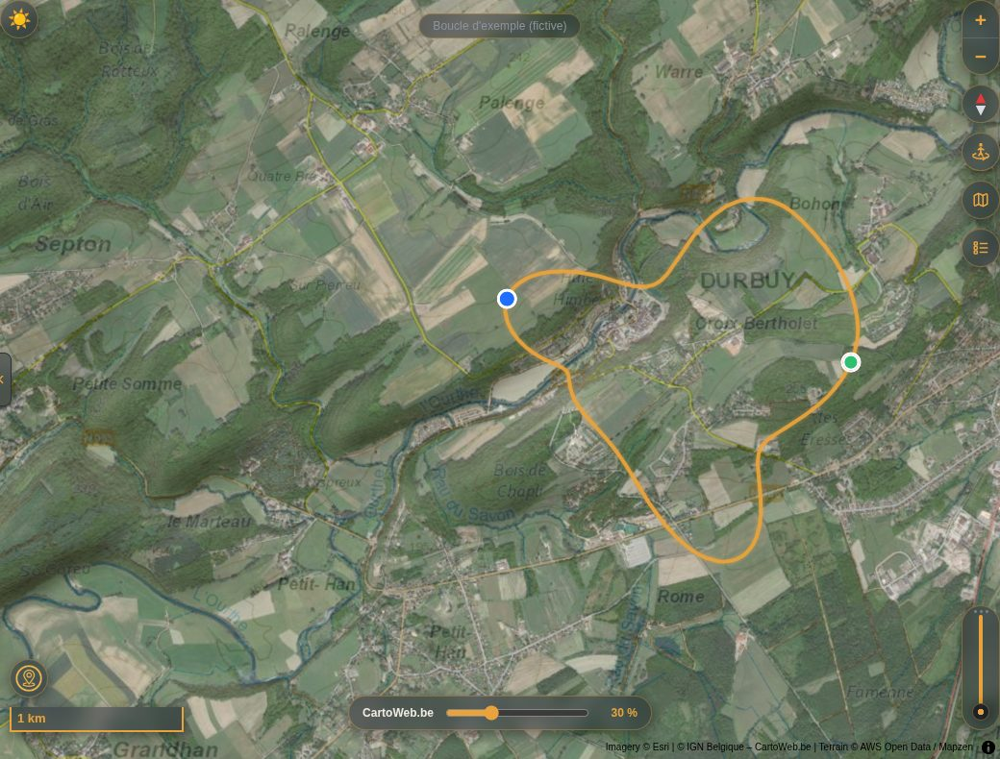
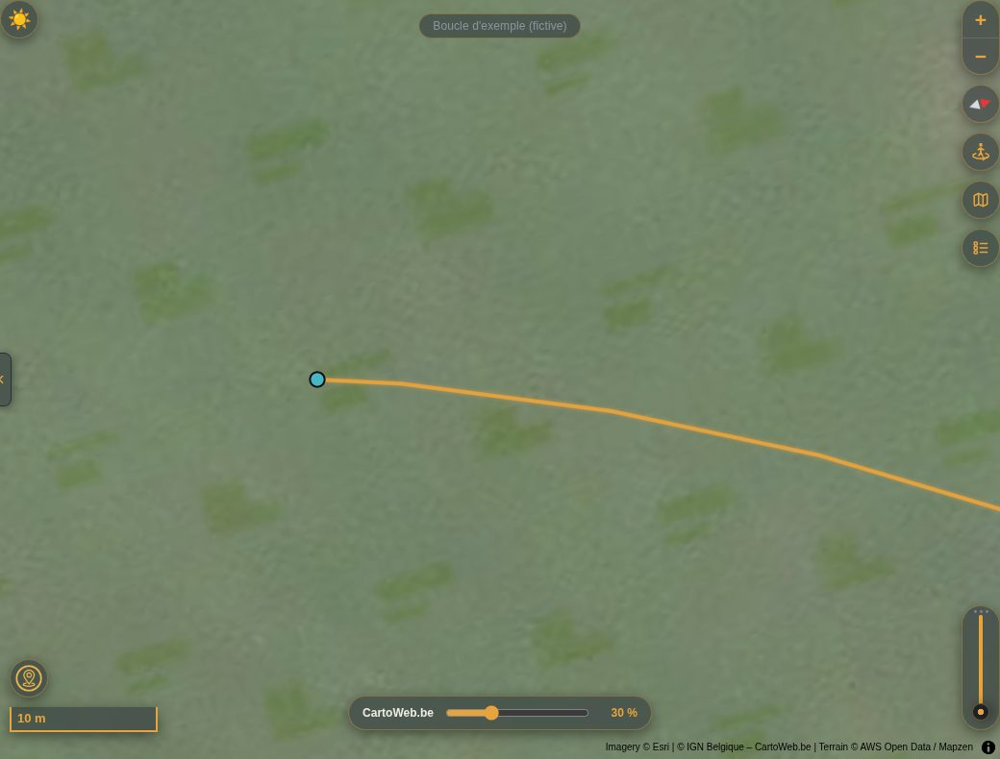
Guidage GPS sur le terrain
GPS guidance in the field
Le bouton Suivre cette trace sur le terrain (GPS), sous les commandes de lecture, utilise la position réelle de votre appareil : la carte vous suit, la partie parcourue se colore, et la pastille en haut de la carte indique quoi faire — une flèche et une distance, rien d'autre.
The Follow this track in the field (GPS) button, below the playback controls, uses your device's real position: the map follows you, the part already covered is coloured, and the badge at the top of the map tells you what to do — an arrow and a distance, nothing else.
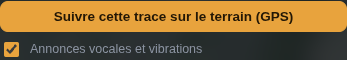
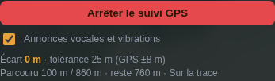
Ce qu'affiche la pastille
What the badge shows
| Pastille | Signification | Badge | Meaning |
|---|---|---|---|
| Flèche inclinée + distance | Prochain changement de direction, et la distance qui vous en sépare. | Tilted arrow + distance | Next direction change, and how far away it is. |
| Flèche droite + distance | Tout droit : plus de virage marqué, la distance est celle qui reste jusqu'à l'arrivée. | Straight arrow + distance | Straight on: no marked turn left, the distance is the one remaining to the finish. |
| Flèche en U | Demi-tour de la trace, ou vous la parcourez en sens inverse. | U-shaped arrow | A U-turn on the track, or you are walking it the wrong way. |
| Pastille rouge + flèche | Hors trace : la flèche pointe (par rapport à l'écran) vers le point le plus proche de la trace, la distance dit à quelle distance il est. | Red badge + arrow | Off track: the arrow points (relative to the screen) to the nearest point of the track, and the distance tells how far it is. |
| Cible de visée | Attente du premier relevé, signal perdu, ou précision trop faible (la valeur affichée est la précision annoncée). | Crosshair | Waiting for the first fix, signal lost, or accuracy too poor (the value shown is the reported accuracy). |
| Drapeau | Arrivée atteinte. | Flag | You have reached the finish. |
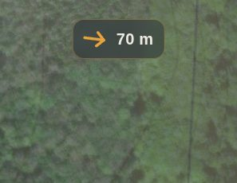
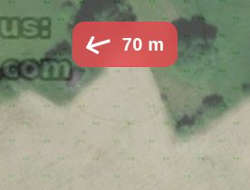
Les changements de direction majeurs
Major direction changes
Un virage est retenu quand le cap change d'au moins 45° entre les 30 m qui précèdent et les 30 m qui suivent un point. Les virages trop proches les uns des autres (moins de 40 m) sont regroupés en un seul.
A turn is kept when the heading changes by at least 45° between the 30 m before and the 30 m after a point. Turns closer than 40 m to each other are merged into one.
| Écart de cap | Annonce | Heading change | Prompt |
|---|---|---|---|
| 45° – 70° | Légèrement à gauche / à droite | Bear left / right | |
| 70° – 110° | Tourner à gauche / à droite | Turn left / right | |
| 110° – 150° | Virage serré à gauche / à droite | Sharp left / right | |
| 150° et plus | Demi-tour | 150° and more | U-turn |
Avec la case Annonces vocales et vibrations (cochée par défaut), chaque virage est annoncé vers 80 m avant — ou 15 secondes avant, à votre vitesse du moment si elle est plus parlante — puis une seconde fois, « Maintenant », juste avant de l'aborder. Sortie de trace, retour, sens inverse et arrivée sont également annoncés.
With the Voice prompts and vibrations box (ticked by default), every turn is announced around 80 m ahead — or 15 seconds ahead at your current speed, whichever fits — then once more, “Now”, just before you reach it. Leaving the track, returning to it, going the wrong way and arriving are announced too.
La tolérance « hors trace » suit la qualité du signal
The off-track tolerance follows the signal quality
Sous les arbres ou en fond de vallée, le GPS se trompe de plusieurs dizaines de mètres. La tolérance vaut donc 15 m + 1,5 × la précision annoncée par l'appareil, entre 25 et 120 m :
Under trees or deep in a valley the GPS can be tens of metres out. The tolerance is therefore 15 m + 1.5 × the accuracy reported by the device, between 25 and 120 m:
| Précision annoncée | Tolérance | Reported accuracy | Tolerance |
|---|---|---|---|
| ± 5 m | 25 m (plancher)(floor) | ||
| ± 8 m | 27 m | ||
| ± 20 m | 45 m | ||
| ± 40 m | 75 m | ||
| ± 70 m et plusand more | 120 m (plafond)(cap) | ||
| au-delà de ± 100 m | aucun verdict : « Signal GPS faible » | beyond ± 100 m | no verdict: “Weak GPS signal” |
- La sortie n'est annoncée qu'après deux relevés hors tolérance espacés d'au moins 3 s — ou tout de suite au-delà de deux fois la tolérance.
- Le retour n'est validé qu'en dessous de 70 % de la tolérance : on évite l'alerte qui s'allume et s'éteint sans arrêt.
- Sans aucun relevé pendant 20 s, la pastille indique « Signal GPS perdu ».
- Boucles et allers-retours : la position est cherchée d'abord autour du dernier point reconnu, en favorisant la continuité, puis sur toute la trace si vous l'avez quittée.
- Leaving is announced only after two fixes outside the tolerance at least 3 s apart — or at once beyond twice the tolerance.
- Returning is accepted only below 70 % of the tolerance, which avoids an alert that keeps flicking on and off.
- With no fix for 20 s, the badge reads “GPS signal lost”.
- Loops and out-and-back sections: your position is first searched around the last matched point, favouring continuity, then over the whole track if you have left it.
Quand le départ est loin
When the start is far away
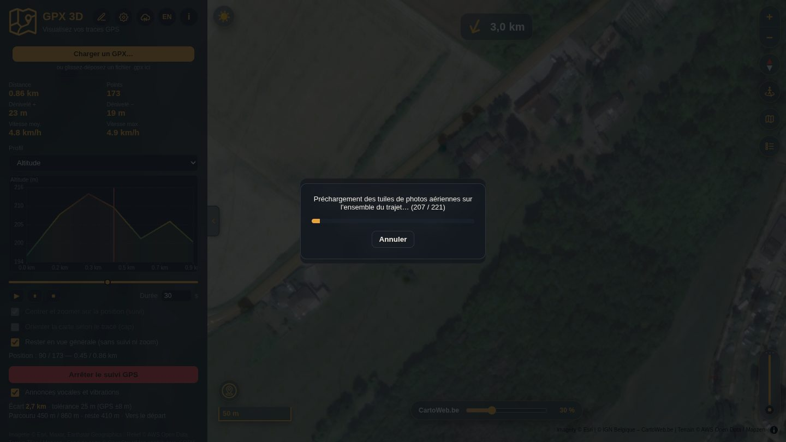
Tant que vous n'avez pas rejoint la trace, la flèche pointe vers le point de départ et aucune alerte « hors trace » n'est donnée. Si le départ est à plus de 500 m, une fenêtre propose : Itinéraire avec une application de navigation (sur Android, au choix parmi celles installées), Itinéraire dans Google Maps, ou Continuer sans.
Until you have reached the track, the arrow points to the start and no “off track” alert is given. If the start is more than 500 m away, a window offers: Directions with a navigation app (on Android, your choice among those installed), Directions in Google Maps, or Continue without.
La carte pendant le guidage
The map during guidance
- Échelle 1:2500, recentrée à chaque relevé. Si la case Cap est cochée, la carte s'oriente dans votre sens de marche.
- Un déplacement à la main suspend le recentrage pendant 8 s ; un zoom manuel est conservé.
- L'écran est maintenu allumé (navigateurs compatibles et application Android).
- Lancer la lecture animée arrête le guidage, et inversement.
- Scale 1:2500, re-centred at every fix. If the Heading box is ticked, the map turns to your direction of travel.
- Panning by hand pauses re-centring for 8 s; a manual zoom is kept.
- The screen is kept awake (supporting browsers and the Android app).
- Starting the animated playback stops guidance, and the other way round.
À savoir : la géolocalisation exige une page en https:// (c'est le cas du site publié) et votre autorisation. Dans un navigateur, la voix passe par la synthèse vocale du système ; dans l'application Android, par le moteur de synthèse d'Android. Le guidage ne fonctionne que la page ouverte à l'écran.
Good to know: geolocation requires an https:// page (the published site is one) and your permission. In a browser, the voice uses the system's speech synthesis; in the Android app, Android's own engine. Guidance only runs while the page is open on screen.
Fonds de carte et relief
Basemaps and terrain
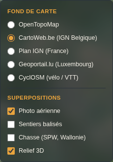
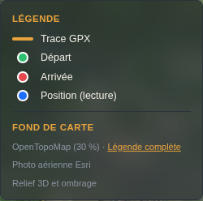
- Fond : OpenTopoMap (par défaut), CartoWeb.be (IGN Belgique), Plan IGN (France), Geoportail.lu (Luxembourg) ou CyclOSM. Hors de sa zone de couverture, un fond régional laisse la place à OpenTopoMap sans modifier votre choix.
- Superpositions : Photo aérienne (Esri, cochée par défaut), Sentiers balisés (Waymarked Trails) et Relief 3D.
- Opacité : avec la photo aérienne, le curseur règle le fond par-dessus — 0 % = photo seule, 100 % = fond opaque (30 % au départ).
- Chasse (SPW, Wallonie) : zones de chasse à une date donnée, avec un bouton vers la légende officielle.
- Relief : exagéré ×1,6, avec ombrage ; l'inclinaison se règle de 0° à 70° avec la barre verticale.
- Basemap: OpenTopoMap (default), CartoWeb.be (IGN Belgium), Plan IGN (France), Geoportail.lu (Luxembourg) or CyclOSM. Outside its coverage a regional basemap gives way to OpenTopoMap without changing your choice.
- Overlays: Aerial photo (Esri, on by default), Waymarked trails and 3D terrain.
- Opacity: with the aerial photo, the slider sets the basemap drawn over it — 0 % = photo only, 100 % = opaque basemap (30 % to begin with).
- Hunting (SPW, Wallonia): hunting areas on a given date, with a button to the official legend.
- Terrain: exaggerated ×1.6, with hillshading; tilt is set from 0° to 70° with the vertical bar.
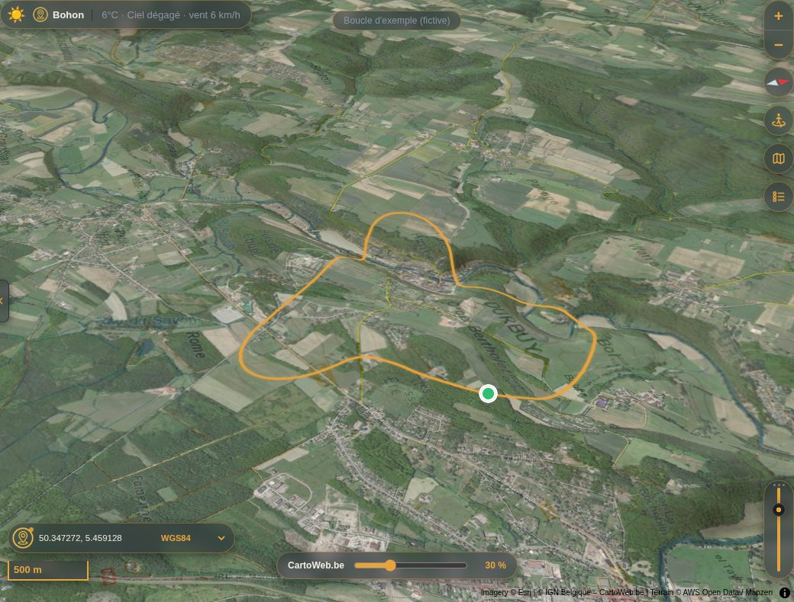
Le fond choisi et les sentiers balisés sont mémorisés d'une visite à l'autre. La couleur de trace Auto s'adapte au fond pour rester lisible. Les illustrations de cette page utilisent CartoWeb.be ; par défaut, l'outil affiche OpenTopoMap.
The chosen basemap and the waymarked trails are remembered between visits. The Auto track colour adapts to the basemap to stay readable. The illustrations on this page use CartoWeb.be; by default the tool shows OpenTopoMap.
Options et thème
Options and theme
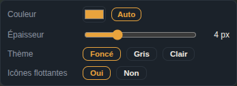
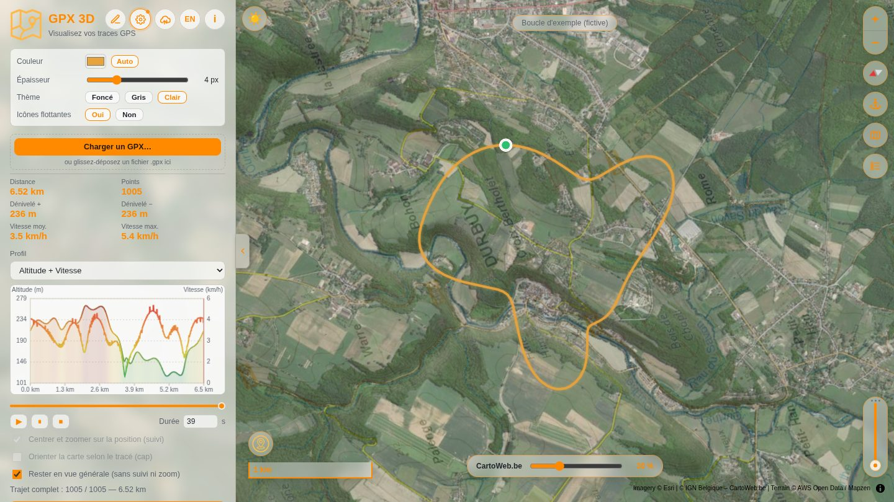
- Couleur de la trace, ou Auto : orange sur la photo aérienne, bleu sur un plan.
- Épaisseur : de 1 à 12 pixels.
- Thème : Foncé, Gris ou Clair — la couleur du ciel suit.
- Icônes flottantes : Oui pour pouvoir les déplacer, Non pour les figer.
- Track colour, or Auto: orange over the aerial photo, blue over a map.
- Width: from 1 to 12 pixels.
- Theme: Dark, Grey or Light — the sky colour follows.
- Floating icons: Yes to drag them, No to lock them.
Langue, thème, style de trace, fond de carte, largeur du panneau et système de coordonnées sont conservés par le navigateur, sur votre appareil uniquement.
Language, theme, track style, basemap, panel width and coordinate system are kept by the browser, on your device only.
Points de la trace
Track points
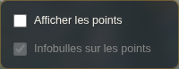
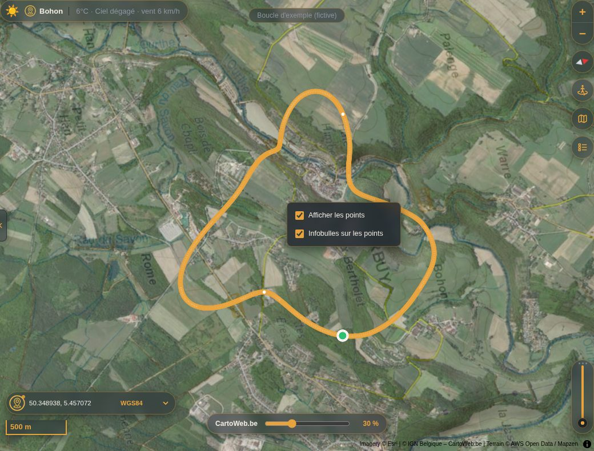
- Afficher les points : décochée au départ.
- Infobulles sur les points : cochée au départ — survolez la trace pour lire distance, altitude, vitesse, heure et capteurs du point le plus proche.
- Show points: off by default.
- Tooltips on points: on by default — hover the track to read distance, elevation, speed, time and sensors of the nearest point.
Un clic droit avec glissement continue de faire pivoter la carte : le menu ne s'ouvre pas.
A right click with a drag still rotates the map: the menu does not open.
Lieu, météo et coordonnées
Place, weather and coordinates
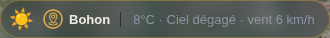
- Sans trace : votre position, si vous autorisez la géolocalisation ; sinon la barre attend qu'une trace soit chargée.
- Avec une trace : le point de départ, puis le point courant pendant la lecture ou le guidage.
- Le nom du lieu (Nominatim) est redemandé après 400 m de déplacement ; la météo (Open-Meteo) après 5 km, ou si le relevé a plus de 10 minutes.
- Without a track: your position, if you allow geolocation; otherwise the bar waits for a track to be loaded.
- With a track: the starting point, then the current point during playback or guidance.
- The place name (Nominatim) is refreshed after 400 m of movement; the weather (Open-Meteo) after 5 km, or when the reading is more than 10 minutes old.
C'est la météo actuelle à cet endroit, pas celle du jour où la trace a été enregistrée.
This is the current weather there, not the weather on the day the track was recorded.
OpenStreetMap
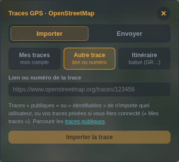
Première utilisation
First use
- Connecté à OSM, ouvrez Mes applications OAuth 2.
- Nom :
GPX 3D· URI de redirection : l'adresse exacte de la page de l'outil (le panneau l'affiche, prête à copier). - Décochez « Application confidentielle ».
- Cochez « Lire les traces GPS privées » et « Téléverser des traces GPS ».
- Collez l'ID client obtenu dans le panneau, puis Se connecter à OpenStreetMap.
- Logged in to OSM, open My OAuth 2 applications.
- Name:
GPX 3D· Redirect URI: the exact address of the tool's page (the panel shows it, ready to copy). - Untick “Confidential application”.
- Tick “Read private GPS traces” and “Upload GPS traces”.
- Paste the client ID into the panel, then Log in to OpenStreetMap.
La connexion exige une page en https:// ou sur http://localhost : elle ne marche pas en ouvrant le fichier en local (file://). Une application déjà déclarée pour The-GPX-Box convient : ajoutez-lui simplement cette URI de redirection.
Logging in requires an https:// page or http://localhost: it does not work from a local file (file://). An application already declared for The-GPX-Box works: just add this redirect URI to it.
Importer
Import
- Mes traces : la liste de votre compte, avec un bouton Importer pour chacune.
- Autre trace : le lien ou le numéro d'une trace publique ou identifiable.
- Itinéraire : un nom ou un numéro de balisage (GR 5…) cherché dans la zone visible de la carte ; un lien Waymarked Trails ou
openstreetmap.org/relation/…est importé directement.
- My traces: the list from your account, each with an Import button.
- Another trace: the link or number of a public or identifiable trace.
- Route: a name or waymark number (GR 5…) searched in the visible map area; a Waymarked Trails or
openstreetmap.org/relation/…link is imported directly.
Envoyer
Upload
La trace chargée part sur votre compte avec une description (obligatoire), des étiquettes et une visibilité. OpenStreetMap exige un horodatage par point : les heures du fichier sont conservées, et synthétisées si le fichier n'en a pas.
The loaded track goes to your account with a description (required), tags and a visibility setting. OpenStreetMap requires a timestamp per point: the file's times are kept, and synthesised when the file has none.
The-GPX-Box
Le bouton crayon ouvre The-GPX-Box, l'outil de création et de modification de tracés, avec la trace chargée. Le bouton montagne de The-GPX-Box fait le chemin inverse. La trace transite par le stockage local du navigateur et n'y reste valable que 2 minutes.
The pencil button opens The-GPX-Box, the companion tool for drawing and editing routes, with the loaded track. The mountain button in The-GPX-Box does the reverse. The track passes through the browser's local storage and stays valid there for 2 minutes only.
Sur Android, si les deux applications sont installées, le passage se fait directement de l'une à l'autre ; sinon le site s'ouvre.
On Android, when both apps are installed the hand-over goes straight from one to the other; otherwise the website opens.
Téléphone et application Android
Phone and Android app
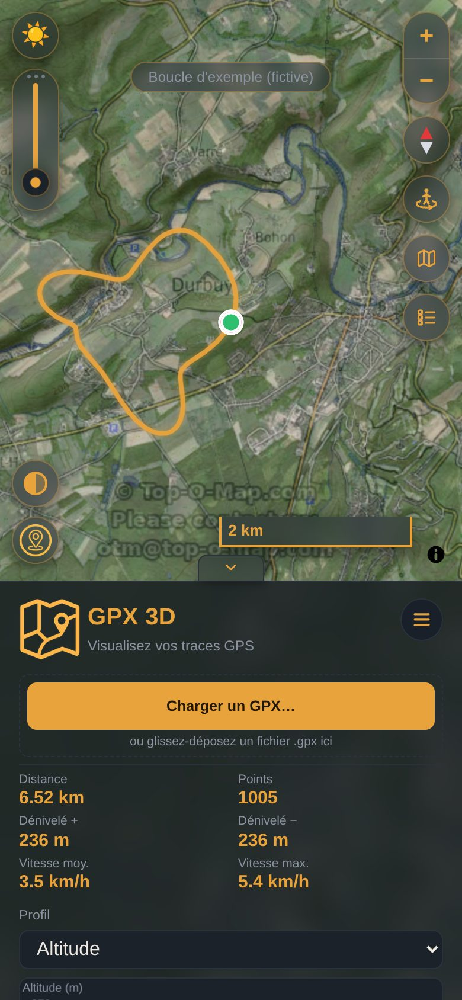
- Le site s'installe comme une application (« Ajouter à l'écran d'accueil »).
- Une application Android est publiée dans le dépôt (release
android-latest, fichierGPX3D.apk). Elle ouvre le site publié en plein écran : une mise à jour du site n'oblige pas à la réinstaller. - Elle apporte en plus : les annonces vocales du guidage, l'écran maintenu allumé, le passage direct vers The-GPX-Box, et un widget « dernière trace » (nom, distance, dénivelés, mini-profil).
- Sur un pliable Motorola razr, l'application s'adapte à l'écran externe et reprend d'un écran à l'autre le GPX chargé, le cadrage et la position de lecture.
- The site installs like an app (“Add to home screen”).
- An Android app is published in the repository (release
android-latest, fileGPX3D.apk). It opens the published site full screen, so a site update does not require reinstalling it. - It adds: the guidance voice prompts, the screen kept awake, the direct hand-over to The-GPX-Box, and a “last track” widget (name, distance, ascent/descent, mini profile).
- On a Motorola razr foldable, the app fits the cover screen and carries the loaded GPX, the framing and the playback position from one screen to the other.
Dépannage
Troubleshooting
Carte noire, ou aucun fond
Vérifiez la connexion Internet, ou une protection qui bloquerait les tuiles (pare-feu, bloqueur de contenu, VPN d'entreprise).
Barre lieu + météo absente
Sans trace, la géolocalisation a été refusée ; ou le service est injoignable ou limité. La barre réapparaît dès qu'une trace est chargée et que le réseau répond.
Aucune courbe de vitesse
Le fichier GPX n'a pas d'horodatage : la vitesse ne peut pas être calculée.
Fichier refusé
XML invalide, ou aucune trace (trk) ni itinéraire (rte) exploitable dans le fichier.
Lecture trop rapide ou trop lente
Ajustez le champ Durée. En mode suivi, le zoom influe aussi : plus la vue est serrée, plus la lecture ralentit.
Les cases Suivi et Cap sont grisées
La case Rester en vue générale est cochée : décochez-la.
Le guidage ne démarre pas
La géolocalisation doit être autorisée, et la page servie en https://. Sur téléphone, vérifiez aussi que la localisation du système est activée et que le navigateur y a droit.
La pastille dit « Signal GPS faible »
La précision annoncée dépasse 100 m (sous couvert forestier, en fond de vallée, en ville dense). L'écart à la trace n'est alors plus évalué : le guidage reprend dès que le signal s'améliore.
Pas de voix pendant le guidage
Vérifiez la case Annonces vocales et vibrations, le volume, et le mode silencieux. Certains navigateurs n'autorisent la synthèse vocale qu'après une première action de votre part sur la page.
La connexion OpenStreetMap échoue
Utilisez une page en https:// ou http://localhost, et vérifiez que l'URI de redirection déclarée sur openstreetmap.org correspond exactement à l'adresse de la page.
Black map, or no basemap
Check the Internet connection, or anything blocking the tiles (firewall, content blocker, corporate VPN).
No place + weather bar
Without a track, geolocation was refused; or the service is unreachable or rate-limited. The bar comes back as soon as a track is loaded and the network answers.
No speed curve
The GPX file has no timestamps, so speed cannot be computed.
File refused
Invalid XML, or no usable track (trk) or route (rte) in the file.
Playback too fast or too slow
Adjust the Duration field. In follow mode the zoom matters too: the tighter the view, the slower the playback.
Follow and Heading are greyed out
The Stay in overview box is ticked: untick it.
Guidance will not start
Geolocation must be allowed and the page served over https://. On a phone, also check that system location is on and that the browser is allowed to use it.
The badge says “Weak GPS signal”
The reported accuracy is worse than 100 m (under tree cover, deep in a valley, among tall buildings). Deviation is not assessed then: guidance resumes as soon as the signal improves.
No voice during guidance
Check the Voice prompts and vibrations box, the volume and the silent mode. Some browsers only allow speech synthesis after you have interacted with the page once.
OpenStreetMap login fails
Use an https:// or http://localhost page, and check that the redirect URI declared on openstreetmap.org matches the page address exactly.
Confidentialité et sources
Privacy and data sources
Le fichier GPX est lu localement par le navigateur et n'est envoyé à aucun serveur — sauf si vous l'envoyez vous-même sur OpenStreetMap. Sont transmis : les coordonnées des tuiles aux fournisseurs de fonds de carte, et la position courante (ou celle de votre appareil, si vous autorisez la géolocalisation sans trace chargée) à Nominatim et Open-Meteo. Le mode Street View envoie à Google le point cliqué.
The GPX file is read locally by the browser and is sent to no server — unless you upload it to OpenStreetMap yourself. What is transmitted: tile coordinates to the basemap providers, and the current position (or your device's, if you allow geolocation with no track loaded) to Nominatim and Open-Meteo. Street View mode sends the clicked point to Google.
Imagerie © Esri, Maxar, Earthstar Geographics · Relief © AWS Open Data Terrain Tiles / Mapzen · © OpenStreetMap contributors, SRTM · Style © OpenTopoMap (CC-BY-SA) · © IGN Belgique (CartoWeb.be) · © IGN France · © ACT Luxembourg (geoportail.lu) · © CyclOSM · Waymarked Trails (CC-BY-SA) · Chasse © SPW – DNF · Météo © Open-Meteo.com (CC-BY 4.0) · Nominatim © OpenStreetMap contributors.